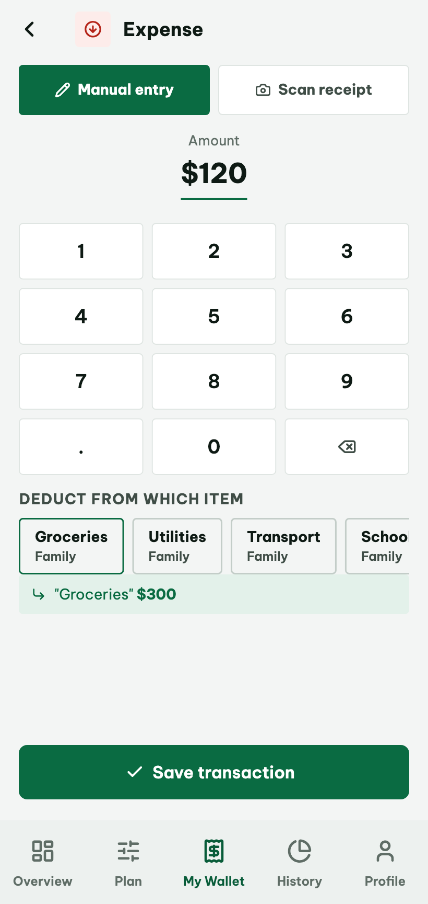
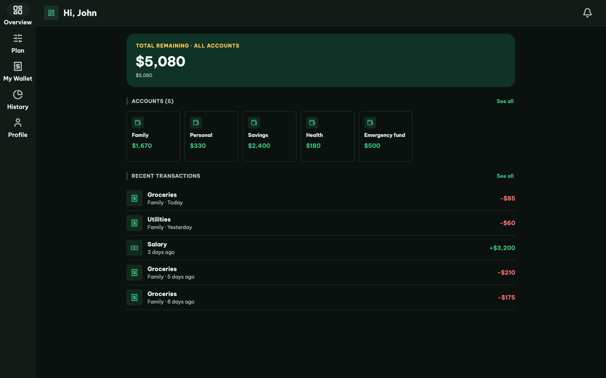
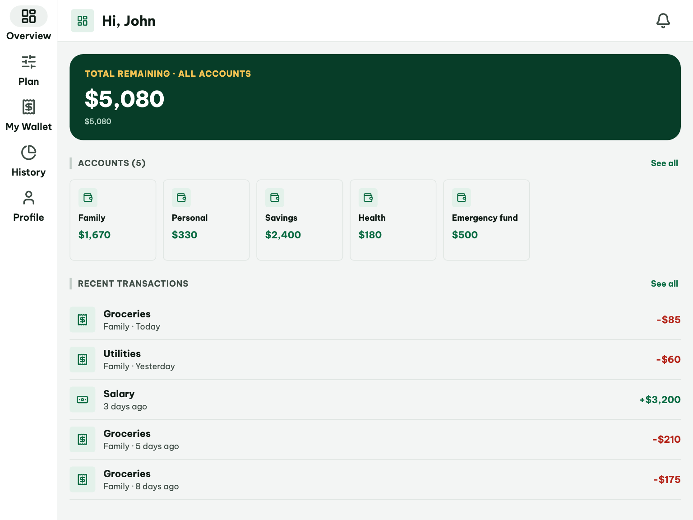
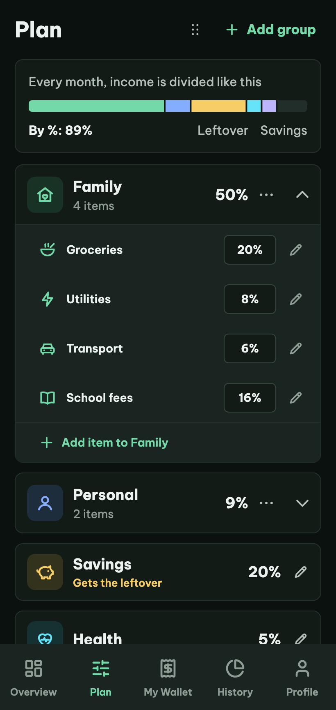
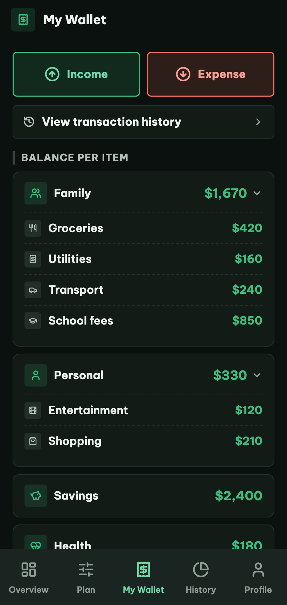

01
A plan made of groups and items
Each item takes a percentage or a fixed amount of income. One item is marked to receive whatever is left over, usually savings.
Case study · Personal project · 2026
A finance management app for budgeting and expense control at home. Offline-first, in Vietnamese and English, on iOS, Android and the web. I built it end to end, with Claude Code and the Speckit framework.
Role
Timeline
Platforms
Stack
Status: in active development. The source repository is private; I am happy to walk through the code on a call.



01 — What it does
01
Each item takes a percentage or a fixed amount of income. One item is marked to receive whatever is left over, usually savings.
02
Record an income and the app splits it across the plan, so every item's balance is always current.
03
A number pad and a list of items, with a live note of what will be left after the transaction. On iOS and Android, receipts can be scanned on the device.
04
A correction does not rewrite the past. It adds a reversing entry, so the audit trail stays intact and balances stay correct.
05
Income, expense and spending by item for any month, with the same numbers the plan uses.
06
Biometric sign-in, a PIN fallback and an inactivity lock, chosen by what the device can actually do.
Also: Vietnamese and English, light and dark themes, and layouts for phone, tablet and web.
02 — Decisions that shaped it
Decision 01
Drift on SQLite holds the truth on the device; Supabase handles sign-in and realtime sync. Every screen reads from one local source, so the app is fast and works offline.
Decision 02
Window width alone picks the layout, never the device type: a bottom bar on phones, a navigation rail from 600dp, and a capped content width on wide windows. The breakpoints live in one shared definition, and widget tests cover each layout. A permanent sidebar for large windows is specified for the redesign.
Decision 03
Biometrics where available. A phone or tablet without them gets a six-digit PIN: obvious ones like 123456 are refused, five wrong tries invalidate it, and it expires after a year. The web gets an inactivity lock plus the password, because a PIN would sit in the same browser storage as the session and add convenience, not protection.
Decision 04
Changing a transaction posts a reversing entry and a new one. A reversed transaction stays in the history and can no longer be changed, which keeps every balance explainable.

Desktop · rail, capped content width

Tablet · rail
Phone · bottom bar
03 — How I built it
I built Finance during the past year, when I started working with AI coding tools. Each feature went through the same loop: a written spec, a plan checked against the project constitution, a task list, implementation with Claude Code, and verification. The constitution is where decisions live, each amendment with its reason.
Four rules from the project constitution, v1.9.0
Code quality
Business logic (calculations, validation, state transitions) MUST NOT live inside build() methods; it belongs in testable, framework-independent Dart classes.
Testing
Tests MUST be written or updated in the same pull request as the behavior they cover — no "add tests later" follow-ups for financial logic.
Offline first
The UI MUST NEVER block on network sync — all reads/writes against the local DB MUST succeed immediately regardless of connectivity.
Adaptive layout
Layout decisions MUST be driven by the available window size, never by device or platform type.
04 — Design to code
The screens were designed in Claude Design and handed to code as tokens, icons and per-screen specs. Light and dark are two designed palettes with the same roles, not one inverted.


05 — Why I built it, and what is next
Why
I want people to stay in control of their money and not waste it. That is why I built Finance: an app that helps you see where your money goes and keep it under control.
Now
Most of it already works the way I intended. The next step is to redesign the UI and UX so the app is easier for everyone to use.
Next
In the future I plan to connect Finance to banking apps, so people can make payments from inside it.